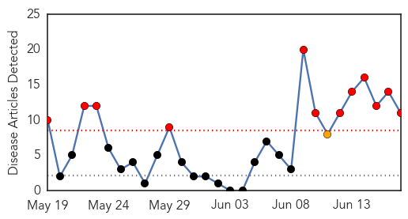

Chikungunya
30-Day Web Trend
12 alerts, 1 warnings

30-Day Twitter Trend
1 alerts, 0 warnings

Article Locations

Article Confidences

Top Articles:
- 1.000
- Caribbean chikungunya cases top 170,000
- 0.999
- New mosquito-borne virus is a threat, experts say
- 0.996
- Georgia Woman Describes Crippling Pain of Chikungunya Virus
- 0.996
- Georgia Woman Describes Crippling Pain of Chikungunya Virus
- 0.995
- Mosquito-borne virus may soon hit GA, health dept. warns
- 0.992
- Florida chikungunya cases continue rise, 70% related to Haiti travel
- 0.987
- Mississippi investigating case of chickungunya, a mosquito-borne illness found in Africa, Asia
- 0.986
- CDC: Mosquito-borne disease spreading to US
- 0.986
- Painful New Virus Symptoms Can Last a Year or More
- 0.969
- MSDH investigates first possible case of chikungunya in Miss.
- 0.956
- Two suspected cases of incurable mosquito-borne virus in N Ga.
Top Tweets:
-
No tweets found for Jun 17, 2014
Pertussis
30-Day Web Trend
3 alerts, 0 warnings

30-Day Twitter Trend
0 alerts, 0 warnings

Article Locations

Article Confidences
Top Articles:
- 0.981
- Whooping Cough Epidemic Strikes California: 800 Cases In Past Two Weeks
- 0.927
- Whooping cough reaches epidemic levels in California
- 0.926
- California's deadly whooping cough epidemic blamed on anti-vaccine campaign — RT USA
- 0.923
- California hit by whooping cough epidemic
- 0.907
- California Facing Whooping Cough Epidemic: High Infection Risk for Children
- 0.875
- California currently experiencing Whooping cough epidemic
- 0.849
- Arizona whooping-cough cases down; California faces epidemic
- 0.845
- Queen of the Valley restricts visits due to whooping cough
- 0.759
- California Facing a Whooping Cough Epidemic
- 0.614
- Pertussis Cases on Track to Reach Record Numbers in Tarrant County
- 0.573
- Whooping Cough Declared Epidemic In California, Utah Still Ok
- 0.541
- Black Hills Pioneer: Local News
Top Tweets:
-
No tweets found for Jun 17, 2014